登入系統後，首頁顯示：
左側選單包含：會員管理、賽事管理（賽事列表、賽事結果紀錄、比賽類型設定）、優惠回饋
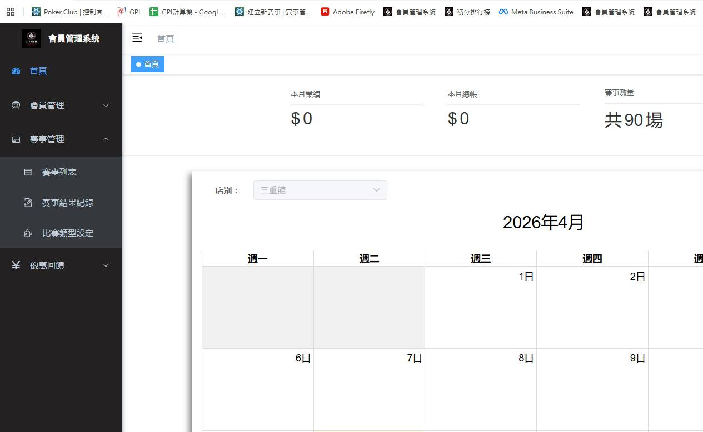
進入 賽事管理 → 賽事列表，可看到所有賽事紀錄。
上方有 新增、修改、刪除 三個操作按鈕。
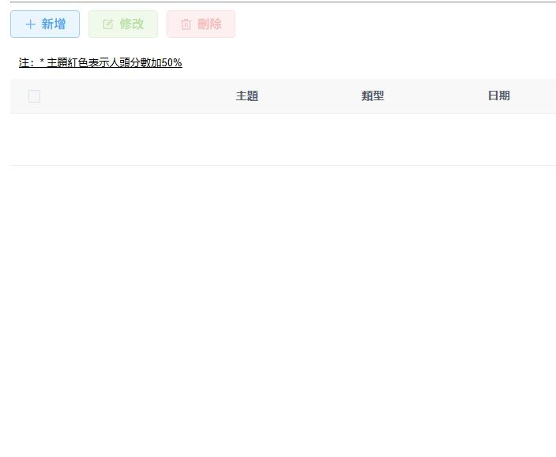
點擊 新增 後，填寫以下欄位：
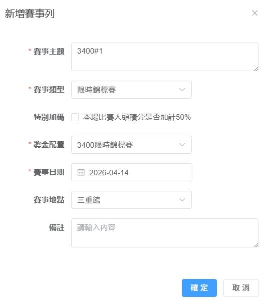
賽事建立成功後，會出現在列表中，顯示 主題、類型、日期、地點。
點擊左側的綠色 「點碼」 按鈕，進入計分牌登記頁面。
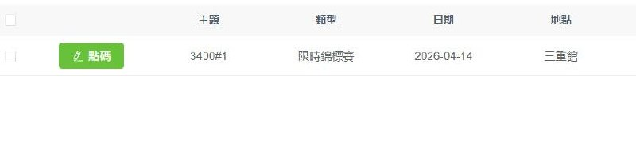
點碼頁面顯示：
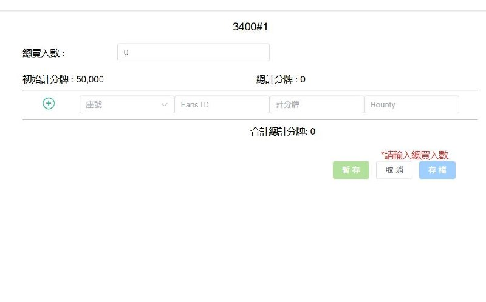
在 比賽結束前 10 分鐘，開始登記還存活的會員。
選擇座號，輸入該玩家的 Fans ID（與 Poker Fans 帳號相同）。
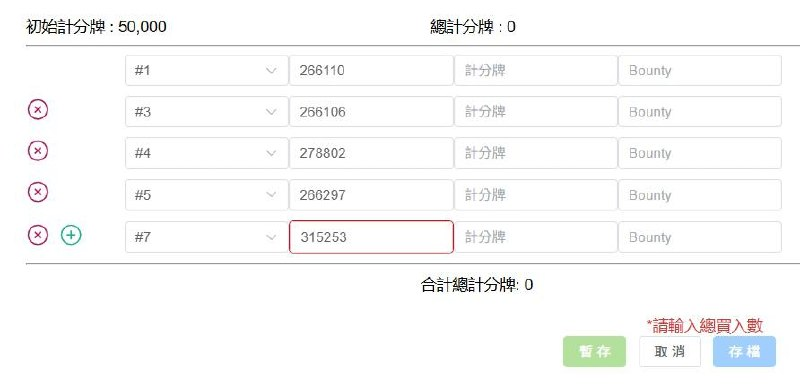
在上方輸入 總買入數（例如 15），系統自動計算：
總計分牌 = 總買入數 × 初始計分牌（15 × 50,000 = 750,000）
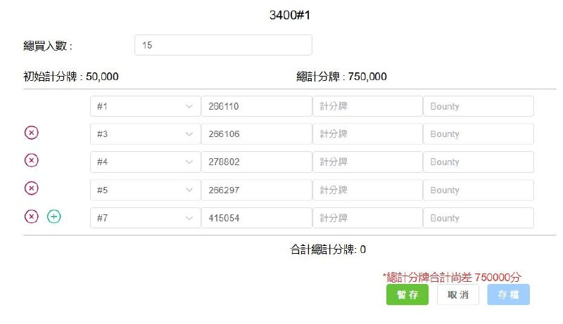
比賽結束後，逐一輸入每位玩家的計分牌數量。
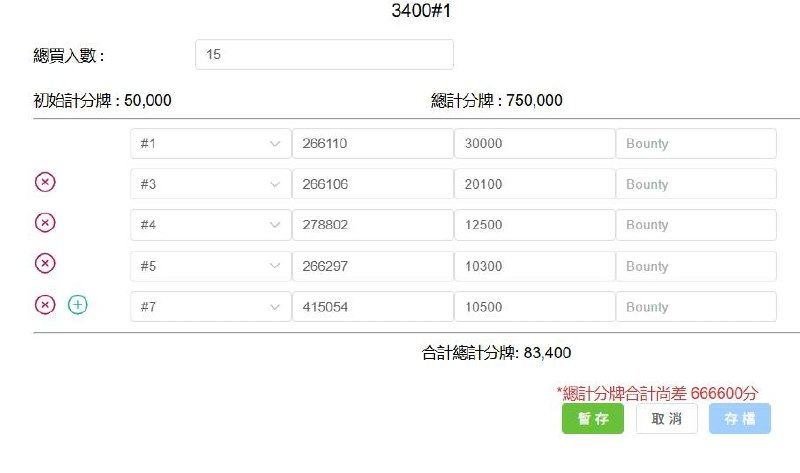
當 合計總計分牌 = 總計分牌（750,000 = 750,000）時，表示計分正確。
計分牌正確後，一樣按 「暫存」。
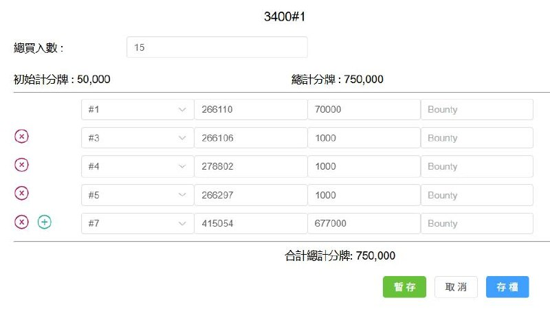
存檔後，回到賽事列表，點擊黃色的 「獎金計算」 按鈕。
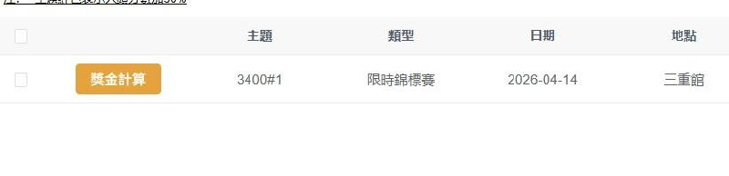
系統自動產出 CITY POKER 獎金簽收表，包含：
按 「列印」 即可印出簽收表。
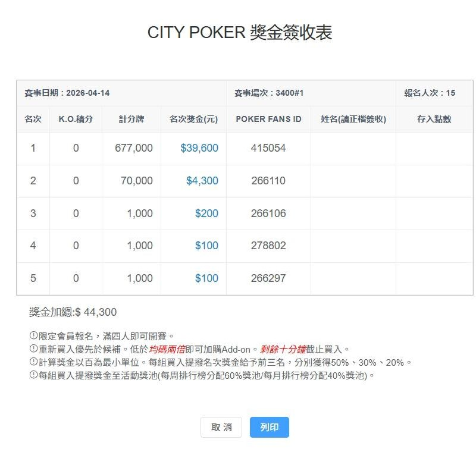
掃碼下載 APP
用手機掃碼或 Safari 開啟，可存到桌面
APP 下載成輕量版教學影片
教客人如何用 Safari 開啟後下載到桌面，方便隨時查看成績